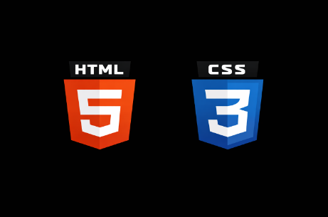
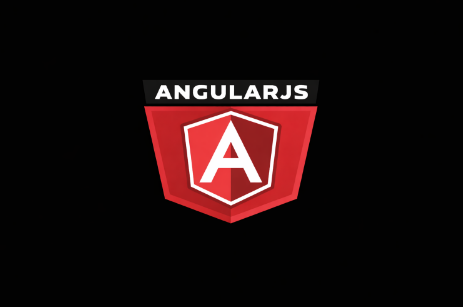
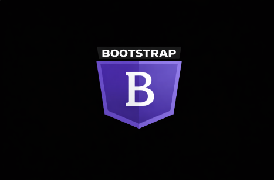

Full Stack Web Developer
Projects
Resume
Exercises
Hi there! I'm Lucian! And I made this page to show my journy to a Full Stack Web Developer.
After a bit of search i found that for this journey i need knowleage on this subjects:


